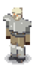
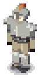
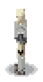
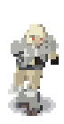

Shard-golem
A creature of The Shardlands.
Shard-golem is a creature of The Shardlands.
Locations
In the game
In the game the Shard-Golem is level 28–30, normal. It is found in The Broken Avenue and The Skull Vault. It can drop Digger's Boots (1%), Dun-Hide Cloak (1%), Dust-Wrapped Bracers (1%), Stake-Cord Belt (1%) and rarely one of 8 rare items.
Quests
Quests that ask for it: Golems on the Avenue (behind the level cap), Golems Below the Vault (behind the level cap) and Golems on the Rise (behind the level cap).
Gallery







